After completing this lab you will be able to:
Note: If you already have an IBM Cloud account, please skip Exercise 1. Additionally if you also have a Watson Studio service created, skip Exercise 2 as well.
Follow the steps in Hands on Lab: IBM Cloud Service Creation to create an IBM cloud account.
Follow the steps in Hands on Lab: IBM Watson Setup to create a Watson Studio service and launch it.
Once the Watson Studio service has been created and Watson Studio has been launched via the Cloud Pak for Data dashboard.
Click on Create a project:
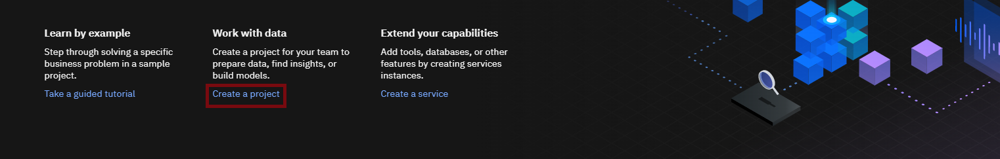On the Create a project page, click Create an empty project
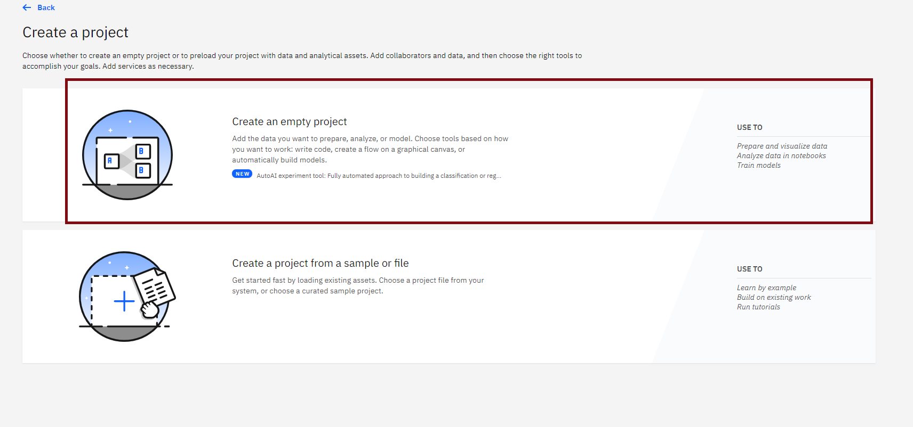Provide a Project Name and Description, as shown below:
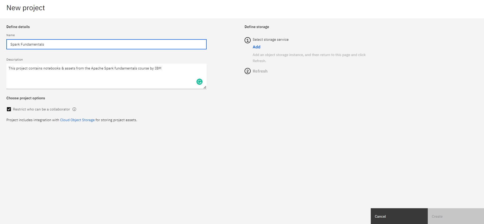You must also create storage for the project.
Click Add
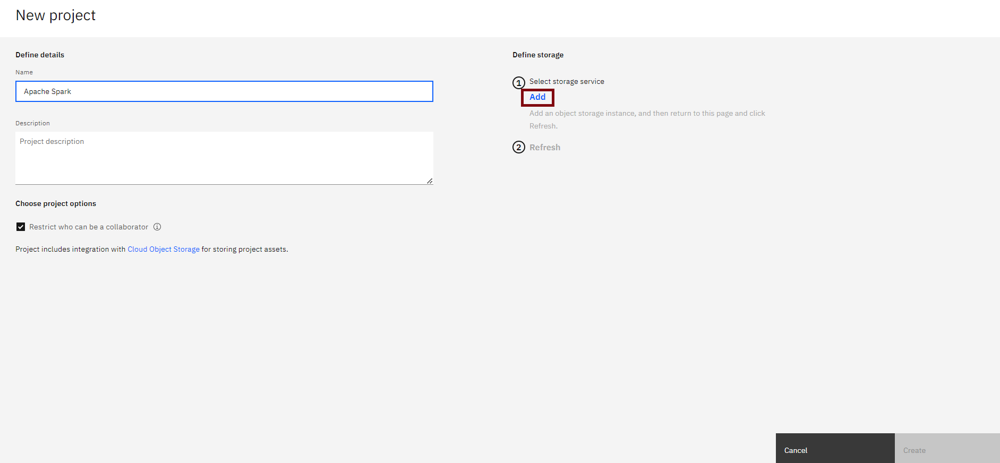On the Cloud Object Storage page, Select the 'Lite' plan and then click on Create. at the bottom.
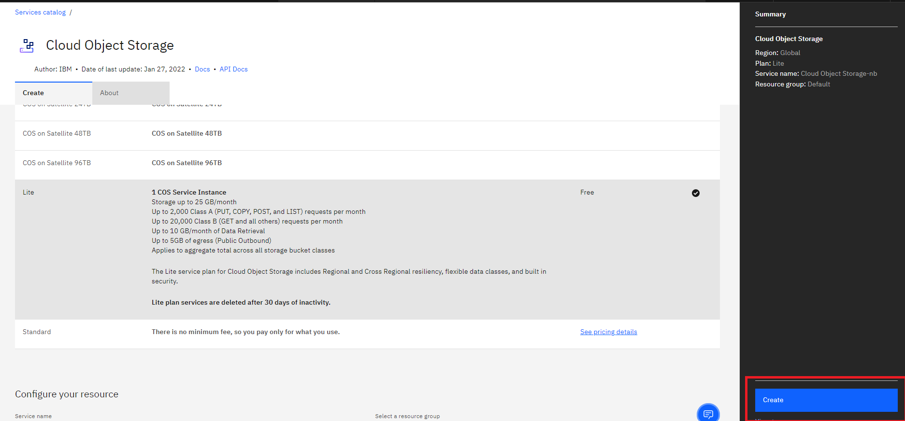You will be redirected to the Object storage page. If you do not see your instance active, please click on Refresh as below:

On the New project page, note that the storage has been added, and then click Create.
After creating the project you will need to add a Jupyter notebook to your project.
You need to add a Notebook to your project. Go to the Assets tab & Click on New asset.
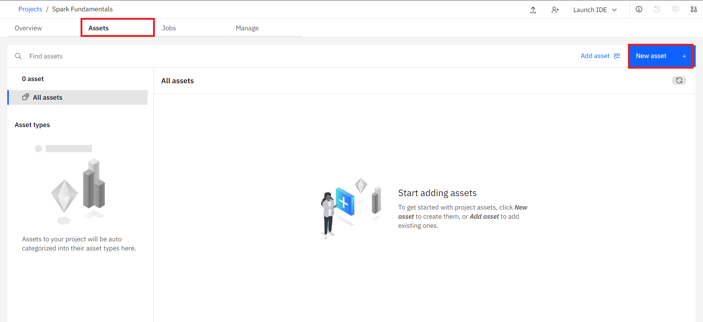Under All types select Jupyter Notebook Editor
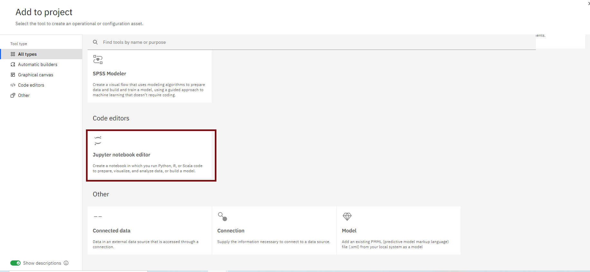On the New Notebook page, enter a name and description for the notebook, and then click From URL as shown below.
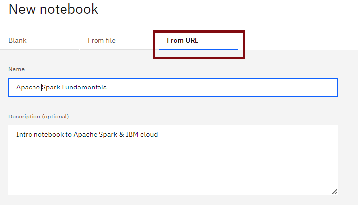Important: Select "Default Spark 3.0 & Python 3.9" as the runtime.
This will initiate a kernel with Spark installed. Copy and paste the notebook URL - https://cf-courses-data.s3.us.cloud-object-storage.appdomain.cloud/IBM-BD0225EN-SkillsNetwork/labs/SparkIntro.ipynb for the Apache Spark Python Intro from this course into the Notebook URL box, and then click Create Notebook.
Note: For future Watson Studio labs that involve Jupyter notebooks, please replace the above notebook link with the relevant link or upload the notebook manually if needed.
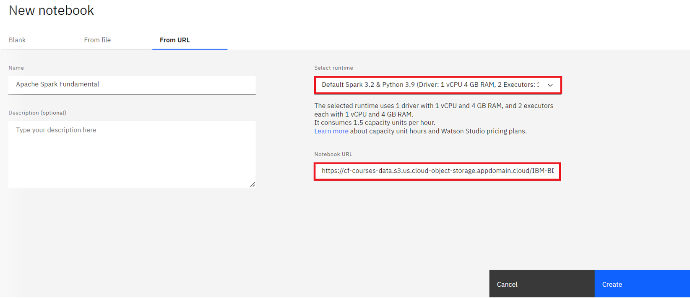You should see a loading screen like this:
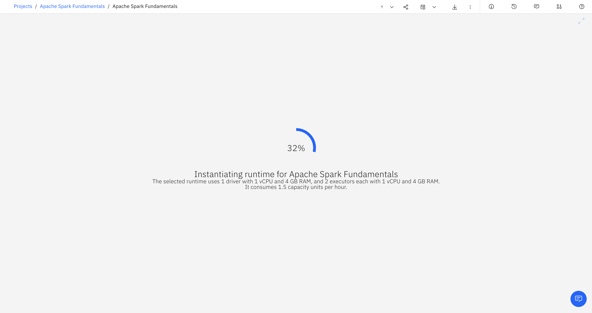Click on Set Kernel
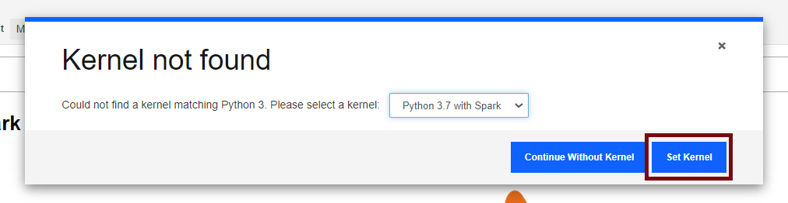Once the kernel has been initiated you will see the notebook like this. Please run all the cells to complete the lab.
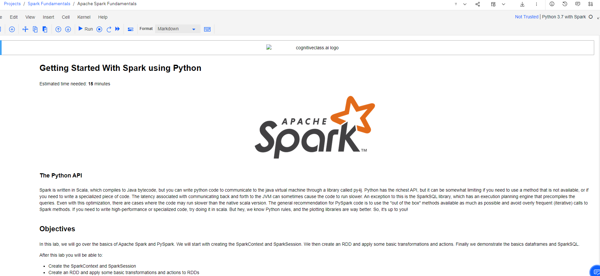| Date | Version | Changed by | Change Description |
|---|---|---|---|
| 2021-07-15 | 1.0 | Karthik | Initial draft |
| 2021-08-17 | 1.1 | Karthik | Post Beta feedback |
| 2022-02-22 | 1.2 | K Sundararajan | Instructions Updated |
| 2022-04-06 | 1.3 | Sourabh | Images Updated |